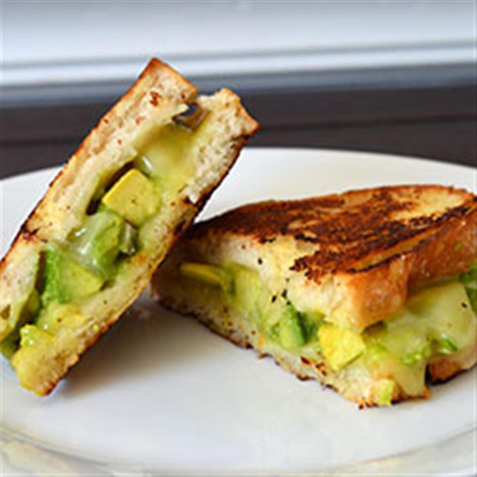

Creamy Jack Grilled Cheese with Fruit-Glazed Avocado

Description
Delicious, creamy Monterey Jack cheese melts smoothly over fresh, gently sweetened, cubed avocado on crispy grilled country bread.
Ingedients
- 1 ripe avocado from Mexico, peeled, pitted and cubed
- 2 tablespoons mango jam
- 1 teaspoon fresh lemon juice
- 1 tablespoon minced red onion
- Salt and black pepper to taste
- 2 tablespoons butter with canola oil
- ¼ cup crumbled cooked bacon, or to taste (Optional)
- 2 teaspoons Dijon mustard
- 4 slices country white bread
- 4 thin slices Monterey Jack cheese
Directions
- Halve the avocado and remove the pit. Score the flesh on each half in a criss-cross pattern. Carefully scoop the cubes into a bowl with a spoon.
- Place mango jam in a small bowl and microwave on high until warm and thinned, about 20 seconds.
- Gently stir the jam into the avocado; blend in lemon juice, red onion, salt and pepper.
- Mix the butter-canola blend and Dijon mustard together in another bowl; stir until smooth. Spread mixture evenly on one side of the bread. Turn slices over onto a cutting board.
- Lay the cheese on the unbuttered sides of the bread. Divide the avocado mixture on top of the cheese and spread evenly. Gently top with slice of bread, butter side up.
- Heat a non-stick skillet on medium-high heat. Place the sandwiches in the pan and cook on each side until golden brown and crispy, 2 to 3 minutes. Cut in half diagonally and serve.
Tips
Creamy jack cheese creates a nice melting consistency. Its mild flavor does not dominate the fresh avocados and should be used for best results. If the creamy jack comes in a block form, slice enough slices to cover the 4 slices of bread. Butter with canola oil was specifically used because it creates a crispier crust and it is soft enough, even at refrigerator temperature, to blend easily with the Dijon mustard.
Nustrition Facts
Per Serving: 563 calories; protein 12.9g; carbohydrates 49.5g; fat 36g; cholesterol 40.2mg; sodium 793.6mg
Go back
Back to top of page